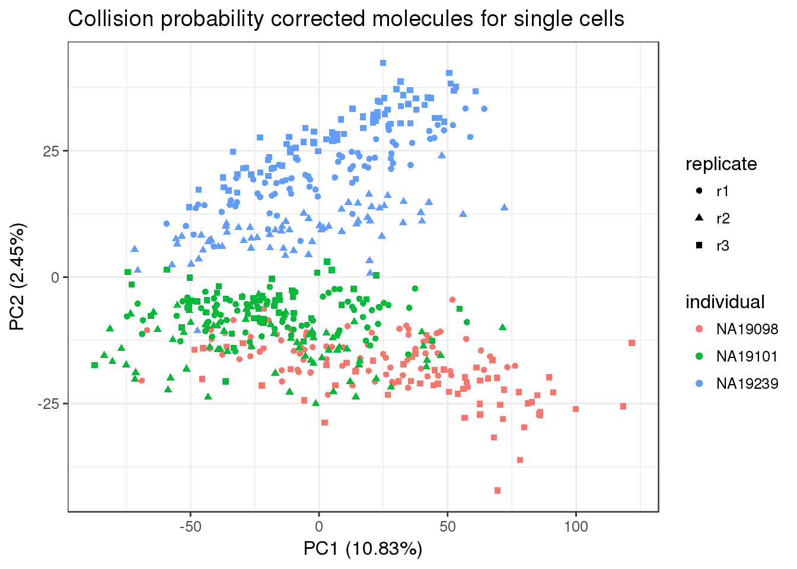
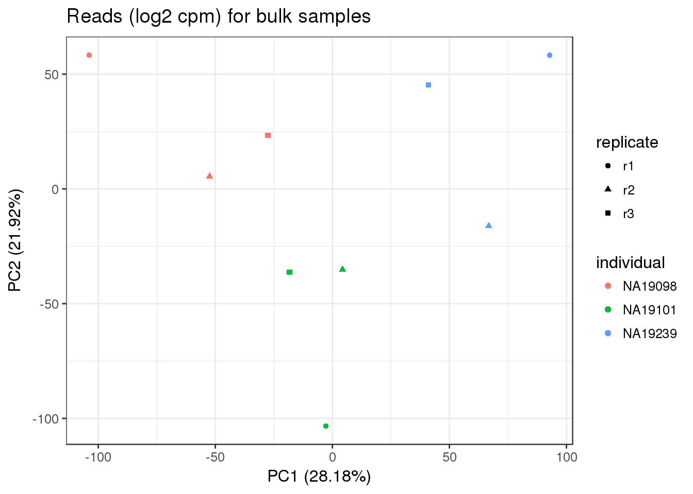
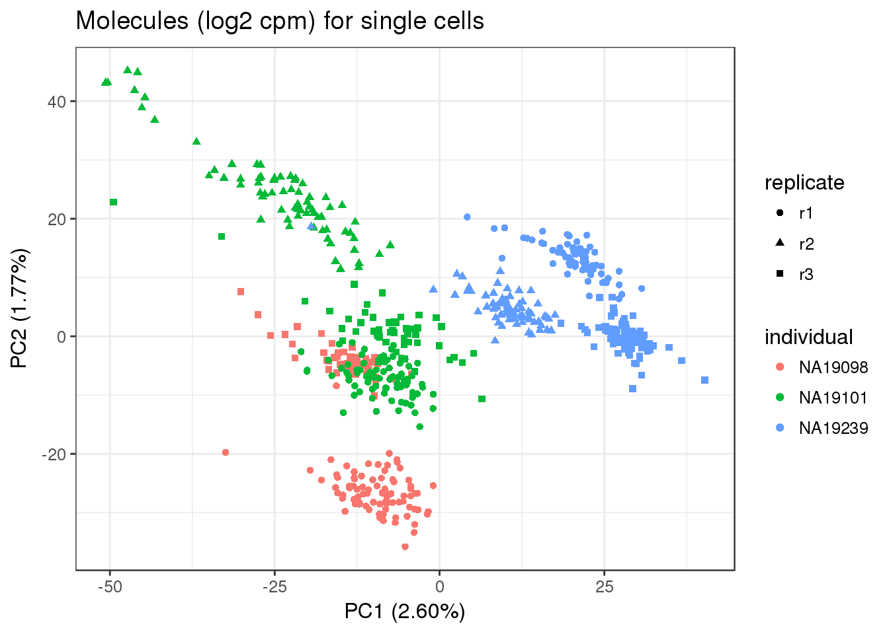

Last updated: 2017-03-06
Code version: f3c5dc0
library("dplyr")
library("limma")
library("edgeR")
library("ggplot2")
theme_set(theme_bw(base_size = 12))
source("../../singleCellSeq/analysis/functions.R")This file standardizes the counts to log2 counts per million (cpm). THe endogenous genes and ERCC controls are standardized seperatly because the same number of ERCC controlls are spiked in each sample.
The reads for the bulk samples are processed as in traditional RNA-seq. On the other hand, the single cell samples are processed differently. First, only thier molecules counts are standardized. Second, the molecule counts are adjusted to account for collision probability before standarization.
Collision probability was used in Grun et al. 2014. It accounts for the random use of identical UMI sequences in molecules from highly expressed genes.
Create the following files. I will store these in the data for this github repo.
reads-bulk-cpm.txt- Reads(log2 cmp) in bulk samples for endogenous genes
reads-bulk-cpm-ercc.txt - Reads (log2 cpm) in bulk samples for ERCC genes
molecules-cpm.txt - Molecules (log2 cpm) in high quality single cells for endogenous genes
molecules-cpm-ercc.txt - Molecules (log2 cpm) in high quality single cells for ERCC genes
Input filtered annotation.
anno_filter <- read.table("../data/annotation-filter.txt", header=TRUE, stringsAsFactors = FALSE)
head(anno_filter) individual replicate well batch sample_id
1 NA19098 r1 A01 NA19098.r1 NA19098.r1.A01
2 NA19098 r1 A02 NA19098.r1 NA19098.r1.A02
3 NA19098 r1 A04 NA19098.r1 NA19098.r1.A04
4 NA19098 r1 A05 NA19098.r1 NA19098.r1.A05
5 NA19098 r1 A06 NA19098.r1 NA19098.r1.A06
6 NA19098 r1 A07 NA19098.r1 NA19098.r1.A07Input filtered read counts.
reads_filter <- read.table("../data/reads-filter.txt", header=TRUE, stringsAsFactors = FALSE)
stopifnot(ncol(reads_filter)==nrow(anno_filter), colnames(reads_filter)==anno_filter$sample_id)Input filtered molecule counts.
molecules_filter <- read.table("../data/molecules-filter.txt", header=TRUE, stringsAsFactors = FALSE)
stopifnot(ncol(molecules_filter) == nrow(anno_filter),
colnames(molecules_filter) == anno_filter$sample_id)Input filtered read counts for bulk samples.
reads_bulk_filter <- read.table("../data/reads-bulk-filter.txt", header = TRUE, stringsAsFactors = TRUE)
stopifnot(ncol(reads_bulk_filter)==9)Input annotation for bulk samples.
anno_bulk <- read.table("../../singleCellSeq/data/annotation-bulk.txt", header = TRUE, stringsAsFactors = FALSE)
head(anno_bulk) individual replicate well batch sample_id
1 NA19098 r1 bulk NA19098.r1 NA19098.r1.bulk
2 NA19098 r2 bulk NA19098.r2 NA19098.r2.bulk
3 NA19098 r3 bulk NA19098.r3 NA19098.r3.bulk
4 NA19101 r1 bulk NA19101.r1 NA19101.r1.bulk
5 NA19101 r2 bulk NA19101.r2 NA19101.r2.bulk
6 NA19101 r3 bulk NA19101.r3 NA19101.r3.bulkDue to stochasticity of the sampling process, not all molecules will be tagged with a UMI and sequenced. We correct for this “collision probability” following the method applited in Grun et al. 2014.
molecules_collision <- -1024 * log(1- molecules_filter/1024)From the paper: solve for number of sequenced trascripts using the probability of not observing a UMI: [-K*ln(1-koi/K)]
pca_molecules_collision <- run_pca(molecules_collision)
pca_molecules_collision_plot <- plot_pca(pca_molecules_collision$PCs, explained = pca_molecules_collision$explained, metadata = anno_filter, color = "individual", shape="replicate") + labs(title="Collision probability corrected molecules for single cells")
pca_molecules_collision_plot This runs a PCA for collision probability but I’m not sure when a correction is made for this.
We calculated the log2 counts per million (cpm) seperatly for the endogenous and ERCC genes.
ercc_rows <- grepl("ERCC", rownames(reads_bulk_filter))
#gives true/false vector #cpm in an edgeR function
reads_bulk_cpm <- cpm(reads_bulk_filter[!ercc_rows, ], log =TRUE)
#write to file
write.table(round(reads_bulk_cpm, digits = 6), "../data/reads-bulk-cpm.txt", quote = FALSE,
sep = "\t", col.names = NA)pca_reads_bulk_cpm <- run_pca(reads_bulk_cpm)
pca_reads_bulk_cpm_plot <- plot_pca(pca_reads_bulk_cpm$PCs, explained = pca_reads_bulk_cpm$explained,
metadata = anno_bulk, color = "individual",
shape = "replicate") +
labs(title = "Reads (log2 cpm) for bulk samples")
pca_reads_bulk_cpm_plot
reads_bulk_cpm_ercc <- cpm(reads_bulk_filter[ercc_rows, ], log = TRUE)
write.table(round(reads_bulk_cpm_ercc, digits = 6), "../data/reads-bulk-cpm-ercc.txt", quote = FALSE,
sep = "\t", col.names = NA)molecules_cpm <- cpm(molecules_collision[!ercc_rows, ], log = TRUE)
write.table(round(molecules_cpm, digits = 6), "../data/molecules-cpm.txt", quote = FALSE,
sep = "\t", col.names = NA)pca_molecules_cpm <- run_pca(molecules_cpm)
pca_molecules_cpm_plot <- plot_pca(pca_molecules_cpm$PCs, explained = pca_molecules_cpm$explained,
metadata = anno_filter, color = "individual",
shape = "replicate") +
labs(title = "Molecules (log2 cpm) for single cells")
pca_molecules_cpm_plot
Replicate 3 from 19098 clusters with 19101.
molecules_cpm_ercc <- cpm(molecules_collision[ercc_rows, ], log = TRUE)
write.table(round(molecules_cpm_ercc, digits = 6), "../data/molecules-cpm-ercc.txt", quote = FALSE,
sep = "\t", col.names = NA)sessionInfo()R version 3.3.2 (2016-10-31)
Platform: x86_64-redhat-linux-gnu (64-bit)
Running under: Scientific Linux 7.2 (Nitrogen)
locale:
[1] LC_CTYPE=en_US.UTF-8 LC_NUMERIC=C
[3] LC_TIME=en_US.UTF-8 LC_COLLATE=en_US.UTF-8
[5] LC_MONETARY=en_US.UTF-8 LC_MESSAGES=en_US.UTF-8
[7] LC_PAPER=en_US.UTF-8 LC_NAME=C
[9] LC_ADDRESS=C LC_TELEPHONE=C
[11] LC_MEASUREMENT=en_US.UTF-8 LC_IDENTIFICATION=C
attached base packages:
[1] parallel stats4 grid stats graphics grDevices utils
[8] datasets methods base
other attached packages:
[1] mygene_1.10.0 GenomicFeatures_1.26.3 GenomicRanges_1.26.3
[4] GenomeInfoDb_1.10.3 broman_0.65-1 gplots_3.0.1
[7] matrixStats_0.51.0 MASS_7.3-45 gridExtra_2.2.1
[10] lme4_1.1-12 workflowr_0.4.0 org.Hs.eg.db_3.4.0
[13] GOstats_2.40.0 graph_1.52.0 Category_2.40.0
[16] Matrix_1.2-7.1 GO.db_3.4.0 AnnotationDbi_1.36.2
[19] IRanges_2.8.1 S4Vectors_0.12.1 Biobase_2.34.0
[22] BiocGenerics_0.20.0 Humanzee_0.1.0 sva_3.22.0
[25] genefilter_1.56.0 mgcv_1.8-15 nlme_3.1-128
[28] BiocInstaller_1.24.0 scales_0.4.1 VennDiagram_1.6.17
[31] futile.logger_1.4.3 edgeR_3.16.5 limma_3.30.11
[34] dplyr_0.5.0 testit_0.6 data.table_1.10.4
[37] biomaRt_2.30.0 cowplot_0.7.0 stringr_1.2.0
[40] reshape2_1.4.2 rmarkdown_1.3 Citrus_0.99
[43] easyGgplot2_1.0.0.9000 ggplot2_2.2.1
loaded via a namespace (and not attached):
[1] minqa_1.2.4 colorspace_1.3-2
[3] rprojroot_1.2 htmlTable_1.9
[5] XVector_0.14.0 base64enc_0.1-3
[7] rstudioapi_0.6 sqldf_0.4-10
[9] splines_3.3.2 knitr_1.15.1
[11] Formula_1.2-1 jsonlite_1.3
[13] nloptr_1.0.4 Rsamtools_1.26.1
[15] annotate_1.52.1 cluster_2.0.5
[17] httr_1.2.1 backports_1.0.5
[19] assertthat_0.1 lazyeval_0.2.0
[21] acepack_1.4.1 htmltools_0.3.5
[23] tools_3.3.2 gtable_0.2.0
[25] Rcpp_0.12.9 Biostrings_2.42.1
[27] gdata_2.17.0 rtracklayer_1.34.2
[29] proto_1.0.0 gtools_3.5.0
[31] devtools_1.12.0 statmod_1.4.29
[33] XML_3.98-1.5 zlibbioc_1.20.0
[35] SummarizedExperiment_1.4.0 RBGL_1.50.0
[37] lambda.r_1.1.9 RColorBrewer_1.1-2
[39] yaml_2.1.14 curl_2.3
[41] memoise_1.0.0 rpart_4.1-10
[43] latticeExtra_0.6-28 stringi_1.1.2
[45] RSQLite_1.1-2 checkmate_1.8.2
[47] caTools_1.17.1 BiocParallel_1.8.1
[49] chron_2.3-50 bitops_1.0-6
[51] evaluate_0.10 lattice_0.20-34
[53] htmlwidgets_0.8 GenomicAlignments_1.10.0
[55] labeling_0.3 GSEABase_1.36.0
[57] AnnotationForge_1.16.1 plyr_1.8.4
[59] magrittr_1.5 R6_2.2.0
[61] Hmisc_4.0-2 DBI_0.5-1
[63] gsubfn_0.6-6 foreign_0.8-67
[65] withr_1.0.2 survival_2.40-1
[67] RCurl_1.95-4.8 nnet_7.3-12
[69] tibble_1.2 futile.options_1.0.0
[71] KernSmooth_2.23-15 locfit_1.5-9.1
[73] git2r_0.18.0 digest_0.6.12
[75] xtable_1.8-2 munsell_0.4.3 This site was created with R Markdown